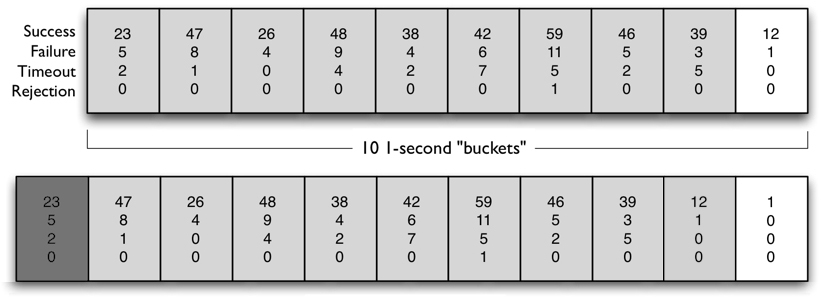

- 00 _导读 _ 什么是“The Fenix Project”？.md.html
- 00 开篇词 _ 如何构建一个可靠的分布式系统？.md.html
- 01 _ 原始分布式时代：Unix设计哲学下的服务探索.md.html
- 02 _ 单体系统时代：应用最广泛的架构风格.md.html
- 03 _ SOA时代：成功理论与失败实践.md.html
- 04 _ 微服务时代：SOA的革命者.md.html
- 05 _ 后微服务时代：跨越软件与硬件之间的界限.md.html
- 06 _ 无服务时代：“不分布式”云端系统的起点.md.html
- 07 _ 远程服务调用（上）：从本地方法到远程方法的桥梁.md.html
- 08 _ 远程服务调用（下）：如何选择适合自己的RPC框架？.md.html
- 09 _ RESTful服务（上）：从面向过程编程到面向资源编程.md.html
- 10 _ RESTful服务（下）：如何评价服务是否RESTful？.md.html
- 11 _ 本地事务如何实现原子性和持久性？.md.html
- 12 _ 本地事务如何实现隔离性？.md.html
- 13 _ 全局事务和共享事务是如何实现的？.md.html
- 14 _ 分布式事务之可靠消息队列.md.html
- 15 _ 分布式事务之TCC与SAGA.md.html
- 16 _ 域名解析系统，优化HTTP性能的第一步.md.html
- 17 _ 客户端缓存是如何帮助服务器分担流量的？.md.html
- 18 _ 传输链路，优化HTTP传输速度的小技巧.md.html
- 19 _ 如何利用内容分发网络来提高网络性能？.md.html
- 20 _ 常见的四层负载均衡的工作模式是怎样的？.md.html
- 21 _ 服务端缓存的三种属性.md.html
- 22 _ 分布式缓存如何与本地缓存配合，提高系统性能？.md.html
- 23 _ 认证：系统如何正确分辨操作用户的真实身份？.md.html
- 24 _ 授权（上）：系统如何确保授权的过程可靠？.md.html
- 25 _ 授权（下）：系统如何确保授权的结果可控？.md.html
- 26 _ 凭证：系统如何保证与用户之间的承诺是准确完整且不可抵赖的？.md.html
- 27 _ 保密：系统如何保证敏感数据无法被内外部人员窃取滥用？.md.html
- 28 _ 传输（上）：传输安全的基础，摘要、加密与签名.md.html
- 29 _ 传输（下）：数字证书与传输安全层.md.html
- 30 _ 验证：系统如何确保提交给服务的数据是安全的？.md.html
- 31 _ 分布式共识（上）：想用好分布式框架，先学会Paxos算法吧.md.html
- 32 _ 分布式共识（下）：Multi Paxos、Raft与Gossip，分布式领域的基石.md.html
- 33 _ 服务发现如何做到持续维护服务地址在动态运维中的时效性？.md.html
- 34 _ 路由凭什么作为微服务网关的基础职能？.md.html
- 35 _ 如何在客户端实现服务的负载均衡？.md.html
- 36 _ 面对程序故障，我们该做些什么？.md.html
- 37 _ 要实现某种容错策略，我们该怎么做？.md.html
- 38 _ 限流的目标与模式.md.html
- 39 _ 如何构建零信任网络安全？.md.html
- 40 _ 如何实现零信任网络下安全的服务访问？.md.html
- 41 _ 分布式架构中的可观测到底说的是什么？.md.html
- 42 _ 分析日志真的没那么简单.md.html
- 43 _ 一个完整的分布式追踪系统是什么样子的？.md.html
- 44 _ 聚合度量能给我们解决什么问题？.md.html
- 45 _ 模块导学：从微服务到云原生.md.html
- 46 _ 容器的崛起（上）：文件、访问、资源的隔离.md.html
- 47 _ 容器的崛起（下）：系统、应用、集群的封装.md.html
- 48 _ 以容器构建系统（上）：隔离与协作.md.html
- 49 _ 以容器构建系统（下）：韧性与弹性.md.html
- 50 _ 应用为中心的封装（上）：Kustomize与Helm.md.html
- 51 _ 应用为中心的封装（下）：Operator与OAM.md.html
- 52 _ Linux网络虚拟化（上）：信息是如何通过网络传输被另一个程序接收到的？.md.html
- 53 _ Linux网络虚拟化（下）：Docker所提供的容器通讯方案有哪些？.md.html
- 54 _ 容器网络与生态：与CNM竞争过后的CNI下的网络插件生态.md.html
- 55 _ 谈谈Kubernetes的存储设计理念.md.html
- 56 _ Kubernetes存储扩展架构：一个真实的存储系统如何接入或移除新存储设备？.md.html
- 57 _ Kubernetes存储生态系统：几种有代表性的CSI存储插件的实现.md.html
- 58 _ Kubernetes的资源模型与调度器设计.md.html
- 59 _ 透明通讯的涅槃（上）：通讯的成本.md.html
- 60 _ 透明通讯的涅槃（下）：控制平面与数据平面.md.html
- 61 _ 服务网格与生态：聊聊服务网格的两项标准规范.md.html
- 62 _ Fenix's Bookstore的前端工程.md.html
- 63 _ 基于Spring Boot的单体架构.md.html
- 64 _ 基于Spring Cloud的微服务架构.md.html
- 65 _ 基于Kubernetes的微服务架构.md.html
- 66 _ 基于Istio的服务网格架构.md.html
- 67 _ 基于云计算的无服务架构.md.html
- 春节特别放送（上）_ 有的放矢，事半功倍.md.html
- 春节特别放送（下）_ 积累沉淀，知行合一.md.html
- 用户故事 _ 詹应达：持续成长，不惧未来.md.html
- 结束语 _ 程序员之路.md.html
- 结课测试 _ 一套习题，测出你的掌握程度.md.html
- 捐赠
38 _ 限流的目标与模式
你好，我是周志明。
在前面两讲中，我们了解了分布式服务中的容错机制，这是分布式服务调用中必须考虑的因素。今天这节课，我们接着来学习分布式服务中另一个常见的机制：限流。
任何一个系统的运算、存储、网络资源都不是无限的，当系统资源不足以支撑外部超过预期的突发流量时，就应该要有取舍，建立面对超额流量自我保护的机制，而这个机制就是微服务中常说的“限流”。
限流的目标
在介绍限流具体的实现细节之前，我们先来做一道小学三年级难度的四则运算场景应用题：
已知条件：-
系统中一个业务操作需要调用10个服务协作来完成，该业务操作的总超时时间是10秒，每个服务的处理时间平均是0.5秒，集群中每个服务均部署了20个实例副本。-
求解以下问题：- (1)单个用户访问，完成一次业务操作，需要耗费系统多少处理器时间？- 答：0.5 × 10 = 5 Sec CPU Time- (2)集群中每个服务每秒最大能处理多少个请求？- 答：(1 ÷ 0.5) × 20 = 40 QPS- (3)假设不考虑顺序且请求分发是均衡的，在保证不超时的前提下，整个集群能持续承受最多每秒多少笔业务操作？- 答：40 × 10 ÷ 5 = 80 TPS- (4)如果集群在一段时间内持续收到100 TPS的业务请求，会出现什么情况？- 答：这就超纲了小学水平，得看你们家架构师的本事了。
前三个问题都很基础我就不说了，对于最后一个问题，如果仍然按照小学生的解题思路，最大处理能力为80 TPS的系统遇到100 TPS的请求，应该能完成其中的80 TPS，也就是只有20 TPS的请求失败或被拒绝才对。然而这其实是最理想的情况，也是我们追求的目标。
事实上，如果不做任何处理的话，更可能出现的结果是，这100个请求中的每一个都开始了处理，但是大部分请求都只完成了10次服务调用中的8次或者9次，然后就是超时没有然后了。
其实在很多的微服务应用中，多数服务调用都是白白浪费掉的，没有几个请求能够走完整笔业务操作。比如早期的12306系统就明显存在这样的问题，全国人民都上去抢票的结果，就是全国人民谁都买不上票。
那么，为了避免这种状况出现，一个健壮的系统就需要做到恰当的流量控制，更具体地说，需要妥善解决以下三个问题：
- 依据什么限流？
要不要控制流量、要控制哪些流量、控制力度要有多大，等等，这些操作都没法在系统设计阶段静态地给出确定的结论，必须根据系统此前一段时间的运行状况，甚至未来一段时间的预测情况来动态决定。
- 具体如何限流？
要想解决系统具体是如何做到允许一部分请求能够通行，而另外一部分流量实行受控制的失败降级的问题，就必须要了解和掌握常用的服务限流算法和设计模式。
- 超额流量如何处理？
超额流量可以有不同的处理策略，也许会直接返回失败（如429 Too Many Requests），或者被迫使它们进入降级逻辑，这种策略被称为否决式限流；也可能是让请求排队等待，暂时阻塞一段时间后继续处理，这种则被称为阻塞式限流。
流量统计指标
那么，要做好流量控制，首先就要弄清楚到底哪些指标能反映系统的流量压力大小。
相比较而言，容错的统计指标是明确的，容错的触发条件基本上只取决于请求的故障率，发生失败、拒绝与超时都算作故障。但限流的统计指标就不那么明确了，所以这里我们要先搞明白一个问题：限流中的“流”到底指什么呢？
要解答这个问题，我们得先梳理清楚经常用于衡量服务流量压力，但又比较容易混淆的三个指标的定义：
- 每秒事务数（Transactions per Second，TPS）
TPS是衡量信息系统吞吐量的最终标准。“事务”可以理解为一个逻辑上具备原子性的业务操作。比如你在Fenix’s Bookstore买了一本书要进行支付，这个“支付”就是一笔业务操作，无论支付成功还是不成功，这个操作在逻辑上就是原子的，即逻辑上不可能让你买本书可以成功支付前面200页，但失败了后面300页。
- 每秒请求数（Hits per Second，HPS）
HPS是指每秒从客户端发向服务端的请求数（这里你要把Hits理解为Requests而不是Clicks，国内某些翻译把它理解为“每秒点击数”多少有点望文生义的嫌疑）。如果只要一个请求就能完成一笔业务，那HPS与TPS是等价的，但在一些场景里（尤其常见于网页中），一笔业务可能需要多次请求才能完成。
比如你在Fenix’s Bookstore买了一本书要进行支付，尽管在操作逻辑上它是原子的，但在技术实现上，除非你是直接在银行开的商城中购物能够直接扣款，否则这个操作就很难在一次请求里完成，总要经过显示支付二维码、扫码付款、校验支付是否成功等过程，中间不可避免地会发生多次请求。
- 每秒查询数（Queries per Second，QPS）
QPS是指一台服务器能够响应的查询次数。如果只有一台服务器来应答请求，那QPS和HPS是等价的，但在分布式系统中，一个请求的响应，往往要由后台多个服务节点共同协作来完成。
比如你在Fenix’s Bookstore买了一本书要进行支付，在扫描支付二维码时，尽管客户端只发送了一个请求，但在这背后，服务端很可能需要向仓储服务确认库存信息避免超卖、向支付服务发送指令划转货款、向用户服务修改用户的购物积分，等等，这里面每次的内部访问，都要消耗掉一次或多次查询数。
总体来说，以上这三点都是基于调用计数的指标，而在整体目标上，我们当然最希望能够基于TPS来限流，因为信息系统最终是为人类用户提供服务的，用户并不关心业务到底是由多少个请求、多少个后台查询共同协作来实现的。
但是，系统的业务五花八门，不同的业务操作对系统的压力往往差异巨大，不具备可比性；而更关键的是，流量控制是针对用户实际操作场景来限流的，这不同于压力测试场景中无间隙（最多有些集合点）的全自动化操作，真实业务操作的耗时会无可避免地受限于用户交互带来的不确定性。比如前面例子中的“扫描支付二维码”这个步骤，如果用户在掏出手机扫描二维码前，先顺便回了两条短信，那整个付款操作就要持续更长时间。
那么此时，如果按照业务开始时计数器加1，业务结束时计数器减1，通过限制最大TPS来限流的话，就不能准确地反映出系统所承受的压力了。所以直接针对TPS来限流，实际上是很难操作的。
目前来说，主流系统大多倾向于使用HPS作为首选的限流指标，因为它相对容易观察统计，而且能够在一定程度上反映系统当前以及接下来一段时间的压力。
但你要知道的是，限流指标并不存在任何必须遵循的权威法则，根据系统的实际需要，哪怕完全不选择基于调用计数的指标都是有可能的。我举个简单的例子，下载、视频、直播等I/O密集型系统，往往会把每次请求和响应报文的大小作为限流指标，而不是调用次数。
比如说，只允许单位时间通过100MB的流量；再比如网络游戏等基于长连接的应用，可能会把登录用户数作为限流指标，热门的网游往往超过一定用户数就会让你在登录前排队等候。
限流设计模式
与容错模式类似，对于具体如何进行限流，业界内也有一些常见、常用、被实践证明有效的设计模式可以参考使用，包括流量计数器、滑动时间窗、漏桶和令牌桶这四种，下面我们一起来看看。
流量计数器模式
我们最容易想到的一种做限流的方法，就是设置一个计算器，根据当前时刻的流量计数结果是否超过阈值来决定是否限流。比如在前面的小学场景应用题中，我们计算得出了该系统能承受的最大持续流量是80 TPS，那我们就可以控制任何一秒内，发现超过80次的业务请求就直接拒绝掉超额部分。
这种做法很直观，而且有些简单的限流就是这么实现的，但它并不严谨，比如说以下两个结论，就很可能出乎你对限流算法的意料之外：
- 即使每一秒的统计流量都没有超过80 TPS，也不能说明系统没有遇到过大于80 TPS的流量压力。
你可以想像这样一个场景：如果系统连续两秒都收到了60 TPS的访问请求，但这两个60 TPS请求分别是前1秒里的后0.5秒，以及后1秒中的前0.5秒所发生的。这样虽然每个周期的流量都不超过80 TPS请求的阈值，但是系统确实是曾经在1秒内发生了超过阈值的120 TPS请求。
- 即使连续若干秒的统计流量都超过了80 TPS，也不能说明流量压力就一定超过了系统的承受能力。
你同样可以想像这样一个场景：如果10秒的时间片段中，前3秒的TPS平均值到了100，而后7秒的平均值是30左右，此时系统是否能够处理完这些请求而不产生超时失败？
答案是可以的，因为条件中给出的超时时间是10秒，而最慢的请求也能在8秒左右处理完毕。如果只基于固定时间周期来控制请求阈值为80 TPS，反而会误杀一部分请求，造成部分请求出现原本不必要的失败。
由此可见，流量计数器模式缺陷的根源在于，它只是针对时间点进行离散的统计。因此为了弥补该缺陷，一种名为“滑动时间窗”的限流模式就被设计了出来，它可以实现平滑的基于时间片段的统计。
滑动时间窗模式
滑动窗口算法（Sliding Window Algorithm）在计算机科学的很多领域中都有成功的应用，比如编译原理中的窥孔优化（Peephole Optimization）、TCP协议的阻塞控制（Congestion Control）等都使用到了滑动窗口算法。而对分布式系统来说，无论是服务容错中对服务响应结果的统计，还是流量控制中对服务请求数量的统计，也都经常要用到滑动窗口算法。
关于这个算法的运作过程，现在你可以充分发挥下想象力，在脑海中构造这样一个场景：在不断向前流淌的时间轴上，漂浮着一个固定大小的窗口，窗口与时间一起平滑地向前滚动。在任何时刻，我们静态地通过窗口内观察到的信息，都等价于一段长度与窗口大小相等、动态流动中的时间片段的信息。由于窗口观察的目标都是时间轴，所以它就被称为形象地称为“滑动时间窗模式”。
我再举个更具体的例子，假如我们准备观察的时间片段为10秒，并以1秒作为统计精度的话，那可以设定一个长度为10的数组（实际设计中通常是以双头队列来实现的，这里简化一下）和一个每秒触发1次的定时器。
现在，假设我们准备通过统计结果进行限流和容错，并定下限流阈值是最近10秒内收到的外部请求不要超过500个，服务熔断的阈值是最近10秒内的故障率不超过50%，那么在每个数组元素中（下图中称为Buckets），就应该存储请求的总数（实际是通过明细相加得到的）和其中成功、失败、超时、拒绝的明细数，具体如下图所示：

滑动窗口模式示意（图片来自Hystrix使用文档）
补充：这里虽然引用了Hystrix文档的图片，但Hystrix实际上是基于RxJava实现的，RxJava的响应式编程思路与我下面描述的步骤差异比较大。我的本意并不是去讨论某一款流量治理工具的具体实现细节，因此这里你可以将以下描述的步骤作为原理来理解。
这样，当频率固定为每秒1次的定时器被唤醒时，它应该完成以下几项工作，这也就是滑动时间窗的工作过程：
- 将数组最后一位的元素丢弃掉，并把所有元素都后移一位，然后在数组第一个插入一个新的空元素。这个步骤即为“滑动窗口”。
- 将计数器中所有统计信息写入到第一位的空元素中。
- 对数组中所有元素进行统计，并复位清空计数器数据供下一个统计周期使用。
所以简而言之，滑动时间窗口模式的限流完全解决了流量计数器的缺陷，它可以保证在任意时间片段内，只需经过简单的调用计数比较，就能控制住请求次数一定不会超过限流的阈值，在单机限流或者分布式服务单点网关中的限流中很常用。
不过，这种限流模式也有一些缺点，它通常只适用于否决式限流，对于超过阈值的流量就必须强制失败或降级，很难进行阻塞等待处理，也就很难在细粒度上对流量曲线进行整形，起不到削峰填谷的作用。而接下来我要介绍的这两种限流模式，就适用于阻塞式限流的处理策略。
我们先来看看漏桶模式。
漏桶模式
在计算机网络中，专门有一个术语“流量整形”（Traffic Shaping），用来描述如何限制网络设备的流量突变，使得网络报文以比较均匀的速度向外发送。流量整形通常都需要用到缓冲区来实现，当报文的发送速度过快时，首先在缓冲区中暂存，然后在控制算法的调节下，均匀地发送这些被缓冲的报文。
可以发现这里我提到了控制算法，常用的控制算法有漏桶算法（Leaky Bucket Algorithm）和令牌桶算法（Token Bucket Algorithm）两种，这两种算法的思路截然相反，但达到的效果又是相似的。
所谓漏桶，可以理解为就是你在小学做应用题时，一定遇到过的那个奇怪的水池：“一个水池，每秒以X升速度注水，同时又以Y升速度出水，问水池啥时候装满”。
那么针对限流模式的话，你可以把“请求”想像成是“水”，水来了都先放进池子里，水池同时又以额定的速度出水，让请求进入系统中。这样，如果一段时间内注水过快的话，水池还能充当缓冲区，让出水口的速度不至于过快。
不过，由于请求总是有超时时间的，所以缓冲区的大小也必须是有限度的，当注水速度持续超过出水速度一段时间以后，水池终究会被灌满。此时，从网络的流量整形的角度看，就体现为部分数据包被丢弃；而从信息系统的角度看，就体现为有部分请求会遭遇失败和降级。
另外漏桶在代码实现上也非常简单，它其实就是一个以请求对象作为元素的先入先出队列（FIFO Queue），队列长度就相当于漏桶的大小，当队列已满时就拒绝新的请求进入。漏桶实现起来很容易，比较困难的地方只在于如何确定漏桶的两个参数：桶的大小和水的流出速率。
首先是桶的大小。如果桶设置得太大，那服务依然可能遭遇流量过大的冲击，不能完全发挥限流的作用；如果设置得太小，那很可能就会误杀掉一部分正常的请求，这种情况与流量计数器模式中举过的例子是一样的。
而流出速率在漏桶算法中一般是个固定值，这对于开篇我提到的那个场景应用题中，固定拓扑结构的服务是很合适的；但同时你也应该明白，那是经过最大限度简化的场景，现实世界里系统的处理速度，往往会受到其内部拓扑结构变化和动态伸缩的影响。所以，能够支持变动请求处理速率的令牌桶算法，可能往往会是更受我们青睐的选择。
令牌桶模式
如果说漏桶是小学应用题中的奇怪水池，那令牌桶就是你去银行办事时摆在门口的那台排队取号机。它与漏桶一样都是基于缓冲区的限流算法，只是方向刚好相反：漏桶是从水池里往系统出水，令牌桶则是系统往排队机中放入令牌。
令牌桶模式具体是如何实现的呢？我来举个例子。
假设我们要限制系统在X秒内的最大请求次数不超过Y，那我们可以每间隔X/Y时间，就往桶中放一个令牌，当有请求进来时，首先要从桶中取得一个准入的令牌，然后才能进入系统处理。任何时候，一旦请求进入桶中发现没有令牌可取了，就应该马上失败或进入服务降级逻辑。
与漏桶类似，令牌桶同样有最大容量，这意味着当系统比较空闲的时候，桶中的令牌累积到一定程度就不再无限增加，而预存在桶中的令牌便是请求最大缓冲的余量。
这里可能说得有些抽象，你可以转化为以下步骤来指导程序编码：
- 让系统以一个由限流目标决定的速率向桶中注入令牌，比如要控制系统的访问不超过100次，速率即设定为1/100=10毫秒。
- 桶中最多可以存放N个令牌，N的具体数量是由超时时间和服务处理能力共同决定的。如果桶已满，第N+1个进入的令牌就会被丢弃掉。
- 请求到时会先从桶中取走1个令牌，如果桶已空就进入降级逻辑。
总体来说，令牌桶模式的实现看似可能比较复杂，每间隔固定时间，我们就要把新的令牌放到桶中，但其实我们并不需要真的用一个专用线程或者定时器来做这件事情，只要在令牌中增加一个时间戳记录，每次获取令牌前，比较一下时间戳与当前时间，就可以轻易计算出这段时间需要放多少令牌进去，然后一次性放完全部令牌即可，所以真正编码时并不会显得很复杂。
分布式限流
那么，在理解了实践可用的几种限流模式之后，我们接着再向实际的信息系统前进一步，一起来讨论下分布式系统中的限流问题。
此前，我们讨论的种种限流算法和模式全部是针对整个系统的限流，总是有意无意地假设或默认系统只提供一种业务操作，或者所有业务操作的消耗都是等价的，并不涉及不同业务请求进入系统的服务集群后，分别会调用哪些服务、每个服务节点处理能力有何差别等问题。
另外，这些限流算法直接使用在单体架构的集群上确实是完全可行的，但到了微服务架构下，它们就最多只能应用于集群最入口处的网关上，对整个服务集群进行流量控制，而无法细粒度地管理流量在内部微服务节点中的流转情况。
所以，我们把前面介绍的限流模式都统称为单机限流，把能够精细控制分布式集群中每个服务消耗量的限流算法称为分布式限流。
你可能要问，这两种限流算法在实现上的核心差别是什么呢？
答案是，要看二者是如何管理限流的统计指标的。
单机限流很好办，指标都是存储在服务的内存当中；而分布式限流的目的是要让各个服务节点的协同限流。无论是将限流功能封装为专门的远程服务，还是在系统采用的分布式框架中有专门的限流支持，都需要把每个服务节点的内存中的统计数据给开放出来，让全局的限流服务可以访问到才行。
一种常见的简单分布式限流方法，是将所有服务的统计结果都存入集中式缓存（如Redis）中，以实现在集群内的共享，并通过分布式锁、信号量等机制，解决这些数据在读写访问时的并发控制问题。
那么由此我们也能得出一个结论，在可以共享统计数据的前提下，原本用于单机的限流模式，理论上也是可以应用于分布式环境中的，可是它的代价也显而易见：每次服务调用都必须要额外增加一次网络开销，所以这种方法的效率肯定是不高的，当流量压力大的时候，限流本身反倒会显著降低系统的处理能力。
这也就是说，只要集中式存储统计信息，就不可避免地会产生网络开销。因此为了缓解这里产生的性能损耗，一种可以考虑的办法是在令牌桶限流模式的基础上，进行“货币化改造”改造。即不把令牌看作是只有准入和不准入的“通行证”，而把它看作是数值形式的“货币额度”。
具体是什么意思呢？也就是当请求进入集群时，首先在API网关处领取到一定数额的“货币”，为了体现不同等级用户重要性的差别，他们的额度可以有所差异，比如让VIP用户的额度更高甚至是无限的。
这里我们将用户A的额度表示为QuanityA。由于任何一个服务在响应请求时，都需要消耗集群中一定量的处理资源，所以在访问每个服务时都要求消耗一定量的“货币”。
假设服务X要消耗的额度表示为CostX，那当用户A访问了N个服务以后，他剩余的额度LimitN就会表示为：
LimitN = QuanityA - ∑NCostX
此时，我们可以把剩余额度LimitN作为内部限流的指标，规定在任何时候，只要剩余额度LimitN小于等于0时，就不再允许访问其他服务了。另外，这时还必须先发生一次网络请求，重新向令牌桶申请一次额度，成功后才能继续访问，不成功则进入降级逻辑。除此之外的任何时刻，即LimitN不为0时，都无需额外的网络访问，因为计算LimitN是完全可以在本地完成的。
这种基于额度的限流方案，对限流的精确度会有一定的影响，比如可能存在业务操作已经进行了一部分服务调用，却无法从令牌桶中再获取到新额度，因“资金链断裂”而导致业务操作失败的情况。这种失败的代价是比较高昂的，它白白浪费了部分已经完成了的服务资源，但总体来说，它仍然是一种在并发性能和限流效果上，都相对折衷可行的分布式限流方案。
小结
这节课，我带你学习了限流的目标与指标这两项概念性的内容，现在你可以根据系统的服务和流量特征，来事先做好系统开发设计中针对流量的规划问题了。
另外，我还带你重点学习了单机限流的流量计数器、滑动时间窗、漏桶和令牌桶这四种实现模式，也了解了如何将单机限流升级为分布式限流的实现方案。你要注意的地方是，对于分布式系统容错的设计，是必须要有且无法妥协的措施。但限流与容错不一样，做分布式限流从不追求“越彻底越好”，我们往往需要权衡方案的代价与收益。
一课一思
请介绍一下你接触的生产系统中，都采用了什么样的流量治理手段或者框架？欢迎给我留言，分享你的答案。
如果你觉得有收获，也欢迎把今天的内容分享给更多的朋友。感谢你的阅读，我们下一讲再见。
© 2019 - 2023 Liangliang Lee. Powered by gin and hexo-theme-book.